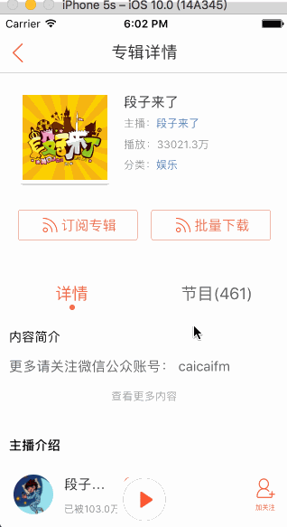
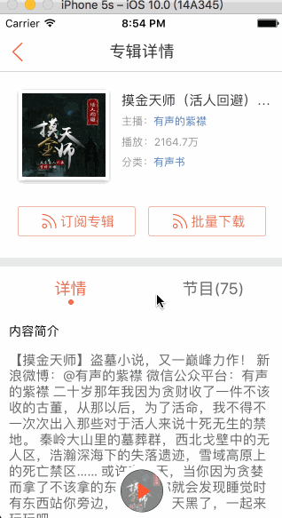
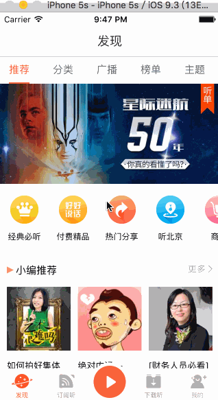
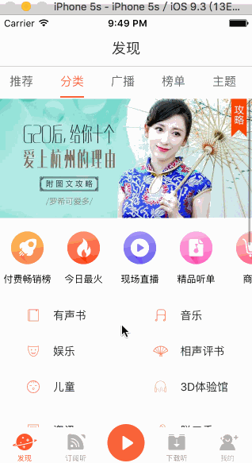
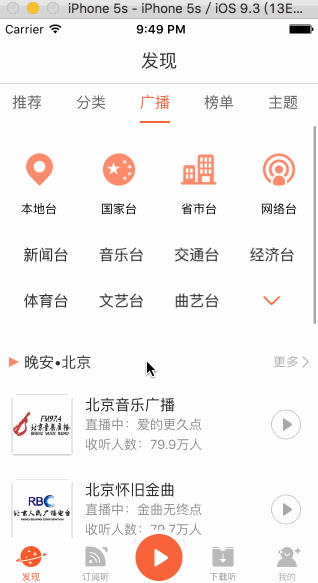
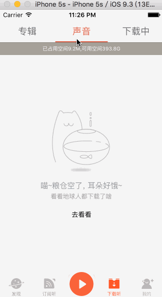
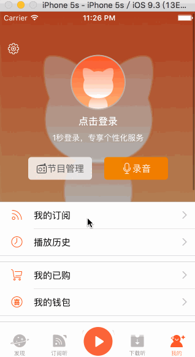

多音频下载、本地播放功能演示  网络音频播放效果演示  推荐页面效果  分类页面效果  广播页面效果  榜单页面效果 主播页面效果 订阅听页面效果 下载听页面效果  我的页面效果 
分析
发现tab中有五个小分类，分别对应五个页面，所有在“发现”的控制器中使用了UIPageViewController来控制五个子控制器。 +从Charles抓出来的接口来看，“推荐”页面一共调用了三个接口，分别请求了推荐、热门、直播的内容，所以在这里选择了Reactivecocoa来实现接口的并发访问
- (void)refreshDataSource {
@weakify(self);
RACSignal *signalRecommend = [RACSignal createSignal:^RACDisposable *(id<RACSubscriber> subscriber) {
@strongify(self);
[self requestRecommendList:^{
[subscriber sendNext:nil];
}];
return nil;
}];
RACSignal *signalHotAndGuess = [RACSignal createSignal:^RACDisposable *(id<RACSubscriber> subscriber) {
@strongify(self);
[self requestHotAndGuessList:^{
[subscriber sendNext:nil];
}];
return nil;
}];
RACSignal *signalLiving = [RACSignal createSignal:^RACDisposable *(id<RACSubscriber> subscriber) {
@strongify(self);
[self requestLiving:^{
[subscriber sendNext:nil];
}];
return nil;
}];
[[RACSignal combineLatest:@[signalRecommend,signalHotAndGuess,signalLiving]] subscribeNext:^(id x) {
@strongify(self);
[(RACSubject *)self.updateContentSignal sendNext:nil];
}];
}
在“推荐”页面中有几个轮播图，仔细观察会发现它的轮播图一直想左转换，所以这里的轮播图片需要做一下特殊处理。以实现无限轮播的效果
- (void)setModel:(XMLYFindFocusImagesModel *)model {
_model = model;
[self.adverScrollView removeAllSubViews];
self.adverScrollView.contentSize = CGSizeMake(kScreenWidth * _model.list.count, 150);
//1.向scrollView中增加UIImageView的时候，需要在最后一张图片后面将第一张图片添加上去
for(NSInteger index = 0; index <= _model.list.count; index++) {
//2.如果是最后一张图片，则放置第一张图片
XMLYFindFocusImageDetailModel \*detail = index == _model.list.count ? _model.list.firstObject : [_model.list objectAtIndex:index];
UIImageView \*imageView = [[UIImageView alloc] init];
imageView.frame = CGRectMake(kScreenWidth \* index, 0, kScreenWidth, 150);
[imageView yy_setImageWithURL:[NSURL URLWithString:detail.pic] options:YYWebImageOptionSetImageWithFadeAnimation];
[self.adverScrollView addSubview:imageView];
}
}
在轮播图滚动动画结束后需要做一下判断，如果当前滚动到了最后一张图片，则立即将scrollView的偏移调整到初始位置，这样一个无限轮播就完成了。
- (void)scrollViewDidScroll:(UIScrollView \*)scrollView {
NSInteger curPage = self.adverScrollView.contentOffset.x / kScreenWidth;
if(curPage == self.model.list.count) {
[self.adverScrollView setContentOffset:CGPointMake(0, 0) animated:NO];
}
}
在有轮播图的地方肯定少不了定时器，如果将定时器直接放在cell中，就会因为cell的复用导致定时器出现问题，所有一般是将定时器放在控制器中。但是这样的话也带来一个问题，就是由于定时器的存在，如果要求定时器的生命周期和控制器相同(也就是在控制器dealloc的时候才取消定时器).这样的控制器是无法调用dealloc的，会造成控制器虽然已经退出但是定时器依然在正常工作。所以这里专门为控制器设计了一个定时器的单例帮助类，这样的话就可以在dealloc中去销毁所有的定时器。
@interface XMLYFindRecommendHelper : NSObject
#pragma mark - Common
//生成帮助类单例
+ (instancetype)helper;
//销毁所有的定时器
- (void)destoryAllTimer;
#pragma mark - Live
// 开启为直播设置的定时器
- (void)startLiveTimer;
//销毁直播的定时器
- (void)destoryLiveTimer;
#pragma mark - Header
//开启头部的定时器
- (void)startHeadTimer;
//销毁头部的定时器
- (void)destoryHeaderTimer;
@end
在广播页面中，有一个根据当前时间显示不同的问候语的小功能。比如现在是早上6点钟，应该显示“早安*北京”。这里就需要用到NSDateFormatter,但是NSDateFormatter的比较消耗性能，所以我专门写了一个XMLYTimeHelper类来管理所有的时间转换操作。在这个类中对NSDateFormatter做了缓存处理，并使用dispatch_semaphore_t保证了线程安全。
//根据字符串生成相应的NSDateFormatter,比如"yyyy-MM-dd HH:mm:ss"
static force_inline NSDateFormatter *XMLYDataCreateFormatter(NSString *string) {
NSDateFormatter *formatter = [[NSDateFormatter alloc] init];
formatter.locale = [[NSLocale alloc] initWithLocaleIdentifier:@"en_US_POSIX"];
formatter.dateFormat = string;
return formatter;
}
//用户直接调用此方法，传入"yyyy-MM-dd HH:mm:ss"这样的字符串生成NSDateFormatter
static force_inline NSDateFormatter *XMLYDateFormatter(NSString *string) {
//1.检查输入的合法性
if(!string || ![string isKindOfClass:[NSString class]] || string.length == 0) return nil;
//2.初始化单例参数
static CFMutableDictionaryRef cache;
static dispatch_semaphore_t lock;
static dispatch_once_t onceToken;
dispatch_once(&onceToken, ^{
cache = CFDictionaryCreateMutable(CFAllocatorGetDefault(), 0, &kCFTypeDictionaryKeyCallBacks, &kCFTypeDictionaryValueCallBacks);
lock = dispatch_semaphore_create(1);
});
//3.加锁
dispatch_semaphore_wait(lock, DISPATCH_TIME_FOREVER);
//4.查询当前字符串是否已经存在相应的NSDateformatter
NSDateFormatter *formatter = CFDictionaryGetValue(cache, (__bridge const void *)(string));
//5.解锁
dispatch_semaphore_signal(lock);
//6.如果缓存中没有，则需要重新生成
if(!formatter) {
formatter = XMLYDataCreateFormatter(string);
//7.重新生成成功，存入缓存
if(formatter) {
dispatch_semaphore_wait(lock, DISPATCH_TIME_FOREVER);
CFDictionarySetValue(cache, (__bridge const void *)(string), (__bridge const void *)(formatter));
dispatch_semaphore_signal(lock);
}
}
return formatter;
}
2016.09.09这次主要是完成了榜单页面和主播页面，榜单页面没有什么特别的东西，主播页面主要使用UICollectionView实现三个cell等分整个屏幕，以实现每个section里面的自动布局。如果想实现无边界的布局，需要重写一下系统的UICollectionViewFlowLayout布局类，否则总是会有一小块边界被显示出来
- (NSArray<UICollectionViewLayoutAttributes *> *)layoutAttributesForElementsInRect:(CGRect)rect {
//解决issue
NSArray* attributes = [[NSArray alloc] initWithArray:[super layoutAttributesForElementsInRect:rect] copyItems:YES];
for(NSInteger i = 1,max = attributes.count; i < max; i++) {
UICollectionViewLayoutAttributes *currentLayoutAttributes = attributes[i];
UICollectionViewLayoutAttributes *prevLayoutAttributes = attributes[i - 1];
NSInteger maximumSpacing = 0;
NSInteger origin = CGRectGetMaxX(prevLayoutAttributes.frame);
if(origin + maximumSpacing + currentLayoutAttributes.frame.size.width < self.collectionViewContentSize.width) {
CGRect frame = currentLayoutAttributes.frame;
frame.origin.x = origin + maximumSpacing;
currentLayoutAttributes.frame = frame;
}
}
return attributes;
}
注意，在获取父类的layoutAttributes数组的时候一定要选择copy，否则会报一个issue
2016-09-09 10:20:10.687 XMLYFM[1453:240776] Logging only once for UICollectionViewFlowLayout cache mismatched frame
2016-09-09 10:20:10.688 XMLYFM[1453:240776] UICollectionViewFlowLayout has cached frame mismatch for index path <NSIndexPath: 0xc000000000200116> {length = 2, path = 1 - 1} - cached value: {{106, 415}, {106.66666666666667, 162.53968253968256}}; expected value: {{106.5, 415}, {106.66666666666667, 162.53968253968256}}
2016-09-09 10:20:10.688 XMLYFM[1453:240776] This is likely occurring because the flow layout subclass XMLYAnchorFlowLayout is modifying attributes returned by UICollectionViewFlowLayout without copying them
在“下载听”页面中有一个显示当前已占用空间和可用空间的功能，关于计算当前可用空间我这里有一个函数，可以直接拿去用。不谢
static int64_t XMLYDiskSpaceFree() {
NSError *error = nil;
NSDictionary *attrs = [[NSFileManager defaultManager] attributesOfFileSystemForPath:NSHomeDirectory() error:&error];
if (error) return -1;
int64_t space = [[attrs objectForKey:NSFileSystemFreeSize] longLongValue];
if (space < 0) space = -1;
return space;
}
在“我的”页面中有一个下拉放大的效果，网上有很多实现的方法，我这里用了一个很简单的方法，在UITableView上增加一个子视图,作为真正的头部视图，遮盖掉tableHeaderView，在ScrollView滚动的时候，改变子视图的大小就行了。
1.创建子视图
- (XMLYMineHeaderView *)headerView {
if(!_headerView) {
//真正的头部视图
_headerView = [[XMLYMineHeaderView alloc] initWithFrame:CGRectMake(0, 0, kScreenWidth, 288)];
//设置tableHeaderView的大小与头视图相同
self.tableView.tableHeaderView = [[UIView alloc] initWithFrame:CGRectMake(0, 0, kScreenWidth, 288)];
//将头部视图作为UITableView子视图，遮盖掉原来的tableHeaderView
[self.tableView addSubview:_headerView];
}
return _headerView;
}
2.TableView滚动时调整headerView的大小
- (void)scrollViewDidScroll:(UIScrollView *)scrollView {
CGFloat offsetY = scrollView.contentOffset.y;
if (offsetY <= 0) {
self.headerView.frame = CGRectMake(offsetY / 2.0, offsetY, kScreenWidth - offsetY, 288 - offsetY);
}
}
3.将headerView的frame计算放在layoutSubViews方法中，这样每一次改变headerView的frame，此方法都会走一遍，从而随之调整子视图的位置。但是千万不要把复杂位置计算放在里面
- (void)layoutSubviews { // height 288
[super layoutSubviews];
CGFloat hspace = (self.frame.size.width - kScreenWidth) / 2.0f;
CGFloat centx = self.frame.size.width / 2.0f;
//背景视图
self.backImageView.frame = CGRectMake(hspace, 0, kScreenWidth, self.frame.size.height);
self.alphaView.frame = CGRectMake(hspace, 0, kScreenWidth, self.frame.size.height);
//节目管理
self.managerButton.frame = CGRectMake(centx - 10 - 104.0f, self.frame.size.height - 36.0 - 37.0f, 104.0f, 37.0f);
//录音按钮
self.recordButton.frame = CGRectMake(centx + 10, self.managerButton.frame.origin.y, 104.0f, 37.0f);
//子标题
self.subTitleLabel.frame = CGRectMake(centx - 150.0f, self.recordButton.frame.origin.y - 24.0f - 15.0f, 300, 15);
//点击登录按钮
self.userNameButton.frame = CGRectMake(centx - 100.0f, self.subTitleLabel.frame.origin.y - 10 - 18.0, 200.0f, 18.0f);
self.avatarImageView.frame = CGRectMake(centx - 45.0, self.userNameButton.frame.origin.y - 10 - 90.0, 90, 90);
//设置按钮
self.settingButton.frame = CGRectMake(12 + hspace, self.avatarImageView.frame.origin.y - 20, 20, 20);
}
代码介绍
由于我的TabBar是自定义的，所以在Push的时候设置hidesBottomBarWhenPushed属性没有效果。应为hidesBottomBarWhenPushed影响的只能是系统的TabBar item。为了解决这个问题需要在TabBar中实现UINavigationController的两个代理方法。当页面即将跳转并且需要影藏TabBar的时候将自己的TabBar设置hidden，当页面跳转回来的时候需要取消影藏，如果在这里稍加点动画效果就能做成与京东app一样的效果。参考内容
- (void)navigationController:(UINavigationController *)navigationController willShowViewController:(UIViewController *)viewController animated:(BOOL)animated {
if (viewController.hidesBottomBarWhenPushed) {
self.bgImageView.hidden = YES;
}
}
- (void)navigationController:(UINavigationController *)navigationController didShowViewController:(UIViewController *)viewController animated:(BOOL)animated {
self.tabBar.hidden = YES;
if (!viewController.hidesBottomBarWhenPushed) {
self.bgImageView.hidden = NO;
}
}
2.在很多的子页面中的正下方都有一个播放按钮，这是为了方便进入播放页面提供的东西。如果在每个页面中都写一个这样的按钮就太麻烦了。所以我写了一个”XMLYBasePlayController”类，在这个类中加入了播放按钮，所有想要加入播放按钮的控制器只需要继承该控制器即可。
//播放按钮的视图类
@interface XMLYBasePlayView : UIView
@property (nonatomic, weak) UIButton *playButton;
@property (nonatomic, weak) UIImageView *bgImageView;
@end
//有音频播放按钮的基类，继承该类可以在控制器下方出现一个播放按钮
@interface XMLYBasePlayController : XMLYBaseController
@property (nonatomic, weak) XMLYBasePlayView *playView;
@end
3.使用的第三方库介绍:DZNEmptyDataSet,这是一个用来处理当UITableView或者UICollectionview无数据时的页面显示情况的三方库。使用挺方便的，当你的页面无数据时，会自动显示空数据情况，让你少了很多逻辑判断。 下面给一个代码里面的使用例子
//1.设置代理
- (void)configEmptyStatus {
self.tableView.emptyDataSetSource = self;
self.tableView.emptyDataSetDelegate = self;
}
//2.返回空数据时的占位图，还有很多功能，github上有详细的demo
#pragma mark - DZNEmptyDataSetSource/DZNEmptyDataSetDelegate
- (UIImage *)imageForEmptyDataSet:(UIScrollView *)scrollView {
return [UIImage imageNamed:@"noData_play_history"];
}
4.由于接口返回的精品听单列表是一个一维数组，而界面中显示它是一个根据月份区分的二维数组，所以在请求到数据后需要将一维数组转换成二维数组。
/**
* 将模型转换成二维数组
*/
- (void)dealWithModel:(XMLYListenListModel *)model isRefresh:(BOOL)isRefresh {
XMLYListenListModel *monthModel;
if(isRefresh || self.dataSource.count == 0) {
[self.dataSource removeAllObjects];
monthModel = [[XMLYListenListModel alloc] init];
} else {
monthModel = self.dataSource.lastObject;
}
for(NSInteger i = 0, max = model.list.count; i < max; i++) {
XMLYListenItemModel *itemModel = model.list[i];
NSString *timeStr = [XMLYTimeHelper dataStringFromTimeInterval:itemModel.releasedAt / 1000 dataFormatter:@"MM/YYYY"];
//当前月份值不存在，则表示是新数据，直接插入
if(!monthModel.timeStr || monthModel.timeStr.length == 0) {
monthModel.timeStr = timeStr;
[monthModel.list addObject:itemModel];
//当前月份存在，并且与item的月份相同，则插入
} else if(monthModel.timeStr && [monthModel.timeStr isEqualToString:timeStr]) {
[monthModel.list addObject:itemModel];
} else {
//老月份加入数组
[self.dataSource addObject:[monthModel copy]];
//开启新月份
monthModel = [[XMLYListenListModel alloc] init];
}
//
if(i == max - 1 && [monthModel.timeStr isEqualToString:timeStr]) {
[self.dataSource addObject:[monthModel copy]];
}
}
[self.collectionView reloadData];
}
5.如果使用系统的CoreText来完成部分文字的点击功能，或者TTTAtributedLabel，实现起来都稍微有点点麻烦，但是自从有了YYText框架，这一切都变得超简单了。
- (NSMutableAttributedString *)configAnchorLabel:(NSString *)string {
NSMutableAttributedString *text = [[NSMutableAttributedString alloc] initWithString:string];
text.yy_color = [UIColor colorWithRed:0.58f green:0.59f blue:0.59f alpha:1.00f];
NSRange range = NSMakeRange(3, string.length - 3);
[text yy_setTextHighlightRange:range color:Hex(0x5680B9) backgroundColor:[UIColor clearColor] tapAction:^(UIView * _Nonnull containerView, NSAttributedString * _Nonnull text, NSRange range, CGRect rect) {
NSLog(@"taptext:%@",text.string);
}];
return text;
}